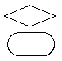
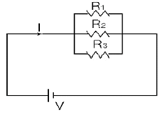

정보기기운용기능사 (2004-04-04 기출문제)
1과목: 전산 기초 이론
1. Computer에서의 세대라는 말은 제작년대가 아닌 변화된Computer의 주구성 요소가 분류의 기준이 된다. 이러한Computer의 주구성 요소가 발달한 순서대로 정리된 항을 고르시오.
- Transistor - 진공관 - 집적회로
- 집적회로 - 진공관 - Transistor
- 진공관 - Transistor - 집적회로
- 진공관 - 집적회로 - Transistor
(정답률: 89%)

2. 중앙처리장치(CPU)의 운영 프로그램이 위치하고 있는 기억장치는?
- 연산 장치
- 주기억 장치
- 제어 장치
- 보조기억 장치
(정답률: 76%)
3. 중앙처리장치의 기억장소에 대한 설명중 틀린 것은?
- 각 기억장소에는 어드레스가 할당된다.
- 1Byte는 보통 8Bit로 되어있다.
- 기억소자는 1또는 0을 기억시킨다.
- 1Bit는 1문자를 나타낸다.
(정답률: 66%)
4. 연산 장치의 더하기 논리 기능을 나타내는 논리회로는?
- AND
- OR
- NOR
- NOT
(정답률: 71%)
5. 10진수 3327을 16진수로 바꾸면?
- BF5
- 15F
- BFE
- CFF
(정답률: 66%)
6. 자기테이프에서의 기록밀도를 나타내는 것은?
- Second per inch
- Block per second
- Bits per inch
- Bits per second
(정답률: 65%)
7. 다음 중 누산기(Accumulator), 가산기(adder)와 관계 깊은 장치는?
- 연산 장치(Arithmetic unit)
- 제어 장치(Control unit)
- 기억 장치(Storage unit)
- 출력 장치(Output unit)
(정답률: 83%)
8. 다음 중 컴퓨터를 교육의 도구로 활용하는 시스템은무엇인가?
- CAI(Computer Assisted Instruction)
- CAM(Computer Aided Manufacturing)
- FMS(Flexible Manufacturing System)
- CAD(Computer Aided Design)
(정답률: 72%)
9. 다음 중에서 원시 프로그램을 기계어로 번역해주는 것은 어느 것인가?
- 컴파일러 프로그램
- C-언어
- 목적프로그램
- 운영체제(Operation System)
(정답률: 73%)
10. 프로그램 설계를 위하여 순서도를 사용할 경우에 마름모기호와 타원형기호가 의미하는 것은?

- 처리와 서브루틴
- 서브루틴과 판단
- 판단과 프로시저의 시작(또는 끝)
- 프로시저의 시작(또는 끝)과 보조설명
(정답률: 79%)
2과목: 정보 기기 운용
11. 팩시밀리의 필요 요소가 아닌 것은?
- 주사 수단
- 동기 수단
- 안테나 결합기
- 수신기록장치
(정답률: 66%)
12. 사무실 업무에 따른 OA기기의 기능과 관계 적은 것은?
- 정보의 보존 및 검색기능
- 문서, 도형의 작성기능
- 데이터 처리기능
- 화상통신 및 신호처리기능
(정답률: 69%)
13. 컴퓨터 바이러스에 대한 설명중 올바른 것은?
- 자연적으로 발생한다.
- 비실행 프로그램은 감염 확율이 높다.
- 감염된 프로그램은 소생가능하다.
- 자생능력이 없다.
(정답률: 66%)
14. 자기테이프나 디스크 등의 보조기억장치 사용시 블럭킹(blocking)을 하는 이유로 옳지 않은 것은?
- 기억공간을 절약한다.
- 에러발생율이 적어진다.
- 판독/기록 등의 입출력 연산횟수가 줄어든다.
- CPU의 유휴시간(idle time)이 줄어든다.
(정답률: 44%)
15. 200[Ω], 50[W]인 저항의 최대 허용전류는 몇[A]인가?
- 0.5[A]
- 0.1[A]
- 4[A]
- 1[A]
(정답률: 45%)
16. 다음중 보조기억장치중 처리 속도가 가장 낮은 것은?
- 자기디스크
- 반도체 기억소자
- 자기테이프
- 자기드럼
(정답률: 65%)
17. 다음 회로의 합성저항 R은 얼마인가? ( R1=R2=R3=9[Ω] )

- R=1[Ω]
- R=2[Ω]
- R=3[Ω]
- R=9[Ω]
(정답률: 73%)
18. 실제로 보낼 데이터가 있는 단말장치만 타임 슬롯을할당하는 기기는?
- 통계적 다중화기
- 주파수 분할 다중화기
- 집중화기
- 역 다중화기
(정답률: 54%)
19. 다음 중 최근 통신실에 주로 사용되는 배선 방법으로 이전이나 증설이 편리한 것은?
- 천장 배선용 배관
- 액세스 플로어(access floor)
- 벽면용 폴(pole)
- 3선 케이블 덕(duck)
(정답률: 74%)
20. 주파수 (frequency)에 대한 설명중 틀린것은?
- 주기와는 역수 관계이다.
- 1초 동안에 반복하는 사이클 발생 수를 나타낸다.
- 단위는 초 [sec]를 사용한다.
- 교류전류, 전파, 음성 등에 사용된다.
(정답률: 67%)
21. 일반적인 팩시밀리(facsimile)의 구성요소와 거리가 먼것은?
- 동기장치
- 에러검출장치
- 광전변환장치
- 수신기록장치
(정답률: 67%)
22. 1 [eV]는 몇 [J] 인가?
- 1
- 1.6 × 1019
- 1.6 × 10-19
- 9.1 × 10-31
(정답률: 71%)
23. 반도체 기억 장치에서 전원이 공급되는 동안에도 주기적으로 재충전하지 않으면 기억된 내용이 소멸되는 기억매체는?
- EPROM
- ROM
- DRAM
- SRAM
(정답률: 56%)
24. 4월 26일에 활동하는 바이러스는?
- LBC 바이러스
- 매크로 바이러스
- CIH 바이러스
- 예루살렘 바이러스
(정답률: 41%)
25. 다음 중 콘덴서를 병렬로 0.2[㎌]와 0.3[㎌]를 연결하였을 때 합성정전 용량은?
- 0.12㎌
- 0.2㎌
- 0.5㎌
- 0.3㎌
(정답률: 73%)
26. 데이터베이스의 종류가 아닌것은?
- 독립형 데이터베이스
- 네트워크형 데이터베이스
- 관계형 데이터베이스
- 계층형 데이터베이스
(정답률: 67%)
27. 정보기기의 운용보존을 위한 기기분석 방법으로 검사대상에 따른 방법이 아닌 것은?
- 공정간 검사
- 수입 검사
- 완제품 검사
- 간접 검사
(정답률: 49%)
28. 스프레드시트의 업무와 관계 없는 것은?
- 자료 수정이 필요하지 않은 업무
- 그래프 작성 업무
- 자료의 집계나 표작성
- 각종 통계자료 작성 업무
(정답률: 80%)
29. 컴퓨터나 단말기의 디지털 데이터를 아나로그 통신 회선을 통해 전송 하기 위해 아날로그 신호로 변환하는 장치를 무엇이라고 하는가?
- 모뎀
- 회선 종단 장치
- 통신 제어 장치
- DSU
(정답률: 67%)
30. 사무자동화 기기의 분류 중 자료 전송 업무와 관련이 없는 기기는?
- 워드프로세서
- 전자 우편
- 팩시밀리
- 근거리 통신망(LAN)
(정답률: 55%)
3과목: 정보 통신 일반
31. 음성용 전화회선에 전송하는 신호는 어느 형태인가?
- 교류 형태의 Digital 신호
- 교류 형태의 Analog 신호
- 직류 형태의 Digital 신호
- 직류 형태의 Analog 신호
(정답률: 62%)
32. IMT-2000 통신서비스란 어떤 통신방식을 말하는가?
- 광통신서비스를 말한다.
- 새로운 이동무선 통신서비스를 말한다.
- 새로운 PC 통신서비스를 말한다.
- 우주 위성통신 서비스를 말한다.
(정답률: 62%)
33. 지역별로 산재된 터미널이나 또는 여러 기능을 가진 컴퓨터들이 중앙의 호스트(host) 컴퓨터와 집중 연결되어 있는 정보통신망의 구성 형태는?
- 나무형
- 루우프형
- 스타형
- 그물형
(정답률: 70%)
34. 데이터 통신속도의 종류가 아닌 것은?
- 데이터 전송속도
- 데이터 인자속도
- 데이터 신호속도
- 데이터 변조속도
(정답률: 77%)
35. 피변조파로 부터 원래의 통신파를 다시 만드는 것을 무엇이라 하는가?
- 발진
- 정류
- 복조
- 증폭
(정답률: 72%)
36. 주파수 다중화에서 부채널(Sub channel)간의 상호간섭을방지하기 위한 완충지역은?
- 가드밴드(Guard Band)
- 채널(Channel)
- 네트워크(Network)
- 마스타그룹(Master group)
(정답률: 79%)
37. 데이터 전송에 있어서 수평-수직패리티 방식은 수평패리티방식 또는 수직패리티방식 등 단독방식인 경우에 비교해서 어떠한 장점이 있는가?
- 장점은 전혀없다.
- 오자 검출능력이 감소된다.
- 오자 검출능력이 향상된다.
- 전송장비가 소형화된다.
(정답률: 73%)
38. 데이터통신의 목적으로 가장 적합한 것은?
- 통신서비스의 신뢰성 및 표준성 수립
- 신속 정확한 정보의 전달과 정보자원의 공유 및 이용
- 정보에 대한 비밀 보장 및 안전
- 정보통신기기의 개발 및 발전 촉진
(정답률: 72%)
39. 시분할시스템(Time Sharing System)의 특징이 아닌 것은?
- 주파수에 따라 제어기능이 있다.
- 시간의 우선도에 따라 Data 처리가 적합하다.
- Data의 입.출력이 자유롭다.
- 사용자가 필요한 응답을 바로 얻을 수 있다.
(정답률: 48%)
40. 데이터통신 시스템의 필수 구비시설이라고 할 수 없는것은?
- 반송중계장치
- 통신회선
- 단말장치
- 중앙처리장치
(정답률: 55%)
41. 화상회의에 관한 설명으로 적합하지 않은 것은?
- 영상· 음향회의 방식에서는 일방향으로만 가능하다.
- N : N 의 상호교환방식이 기본적 개념이다.
- 원거리에 있는 사람들 사이의 화면회합이다.
- 참여자가 영상과 함께 음성도 상호교환할 수 있다.
(정답률: 77%)
42. 통신망은 설계방식과 기술에 따라 구분한다. 다음 중에서교환방식에 따른 통신망에 해당하지 않는 것은?
- 물류교환망
- 패킷교환망
- 메시지교환망
- 회선교환망
(정답률: 77%)
43. 광통신에서 발광기로 사용되는 다이오드는?
- 레이저 다이오드
- 제너 다이오드
- 스윗칭 다이오드
- 에사키 다이오드
(정답률: 84%)
44. 빛을 이용하여 정보를 전송하는 매체는?
- 동축케이블
- 광섬유케이블
- 무선전자파
- 통신위성
(정답률: 85%)
45. 전송 선로의 무왜곡 조건은? (단, R=저항, C=정전용량, G=콘턱턴스, L=인덕턴스)
- R+L = C+G
- RG = LC
- RC = LG
- R-L = C-G
(정답률: 67%)
46. 8위상변조와 2진폭변조를 혼합하여 변복조할 때 동기식모뎀의 신호 전송속도가 1200[보오]인 경우 비트 속도는?
- 1,200[bps]
- 2,400[bps]
- 4,800[bps]
- 9,600[bps]
(정답률: 59%)
47. ARQ로서 송신측은 한개의 블록을 전송한 다음 수신측에서 에러의 발생을 점검 후, ACK 나 NAK 를 보낼 때까지기다리는 방식은?
- Stop and wait ARQ
- 연속적 ARQ
- 적응적 ARQ
- 전진에러 수정
(정답률: 74%)
48. 전자교환기의 구성 요소와 가장 거리가 먼 것은?
- 서비스 제공장치
- 정합부
- 제어부
- 통화로부
(정답률: 50%)
49. 트랜젝션 터미날(Transaction Terminal)에 관한 설명 중 가장 관계가 먼 것은?
- 신속한 반응시간을 요구하기 때문에 공중회선을 이용하는 경우가 드물다.
- 단말기에 지능 기능이 있어 통신회선의 고장시에도 대부분의 작업을 자체에서 처리할 수 있다.
- 망의 형태는 루우프형 구조를 가지는 경우가 있다.
- 은행,백화점,소매상 등에 많이 사용되는 단말기이다.
(정답률: 42%)
50. DTE/DCE 접속 규격을 설명하는 것이 아닌 것은?
- 화학적 특성
- 전기적 특성
- 절차적 특성
- 기계적 특성
(정답률: 66%)
4과목: 정보 통신 업무 규정
51. 단말기기를 가장 적합하게 정의한 것은?
- 통신회선에 접속하는 전신기, 전화기, 팩시밀리장치, 정보통신장치 등을 말한다.
- 통신회선에 접속하는 교환기, 변복조기, 중계기, 증폭기 등을 말한다.
- 정보통신에 이용하는 정보통신기기의 본체와 이에부수되는 입· 출력장치와 기타의 기기 등을 말한다.
- 공중통신설비와 접속하여 이용하고자 이용자가 설치하는 전건, 짹, 플럭, 버튼, 탄기반 등을 말한다.
(정답률: 51%)
52. 전송레벨의 단위 중 절대레벨의 단위는?
- [dB]
- [Hz]
- [㎽]
- [dBm]
(정답률: 60%)
53. 전기통신설비의 범위에 해당되지 않는 것은?
- 통신용 선조
- 전동발전기
- 방송수신안테나
- 자동교환기
(정답률: 46%)
54. 정보통신산업의 기반조성과 가장 관련이 적은 것은?
- 비상시 정보통신의 확보
- 정보통신의 표준화 추진
- 정보통신산업단지의 조성
- 정보통신기술인력의 양성
(정답률: 47%)
55. 정보통신회선을 사용하여 제공하는 정보통신역무는?
- 정보의 검색과 처리
- 정보기기의 개발과 보급
- 하드웨어와 소프트웨어
- 정보통신설비의 시험검사
(정답률: 54%)
56. 정보화추진위원회에 관한 설명으로 맞지 않는 것은?
- 위원장은 정보통신부장관이 된다.
- 위원회의 효율적인 운영을 위하여 정보화추진실무위원회를 둔다.
- 정보화 촉진에 관한 사항을 심의한다.
- 국무총리 소속하에 둔다.
(정답률: 53%)
57. 정보통신의 비밀관리에 해당되지 않는 것은?
- 불온통신 단속
- 기자재 규격확보
- 정보비밀 보호조치
- 통신비밀 보호조치
(정답률: 70%)
58. 부가통신사업자가 제공하는 통신역무에 해당하는 것은?
- 무선호출역무
- 공항통신역무
- 위성통신역무
- PC통신역무
(정답률: 54%)
59. 정보통신부장관이 전기통신 기본계획을 수립하는 사항에해당하지 않는 것은?
- 전기통신의 이용효율화에 관한 사항
- 전기통신의 질서유지에 관한 사항
- 전기통신의 자가사업에 관한 사항
- 전기통신사업에 관한 사항
(정답률: 63%)
60. 전기통신사업법의 내용으로 가장 옳지 않은 것은?
- 기간통신사업자는 타인에게 손실을 끼친 경우 손실을 입은 자에 대하여 정당한 보상을 하여야 한다.
- 기간통신사업자는 다른 통신사업자로부터 전기통신시설에 대한 출입 또는 공동사용을 요청받은 경우에는 협정을 체결하여 공동사용을 허용할 수 있다.
- 전기통신설비의 설치를 위하여 토지 등을 일시사용한 경우에는 원상회복을 할 필요가 없다.
- 누구든지 전기통신설비를 손괴하여서는 안된다.
(정답률: 74%)
진공관은 초기에 컴퓨터에서 사용되었던 주요한 전자 부품 중 하나였습니다. 그러나 진공관은 크기가 크고 발열이 심하며, 많은 전력을 소비하는 등의 단점이 있었습니다.
이에 대한 대안으로 개발된 것이 Transistor입니다. Transistor는 진공관보다 작고 경제적이며, 더 적은 전력을 소비합니다. 이로 인해 Transistor는 진공관보다 더 효율적인 컴퓨터 제작을 가능하게 했습니다.
하지만 Transistor를 사용한 컴퓨터도 여전히 크기가 크고 비싸며, 많은 전력을 소비하는 등의 문제가 있었습니다. 이에 대한 대안으로 개발된 것이 집적회로입니다. 집적회로는 수천 개의 Transistor를 작은 실리콘 칩에 집적시켜서 만든 것으로, 크기가 작고 저렴하며, 더 적은 전력을 소비합니다. 이로 인해 집적회로는 현대 컴퓨터의 핵심 부품이 되었습니다.